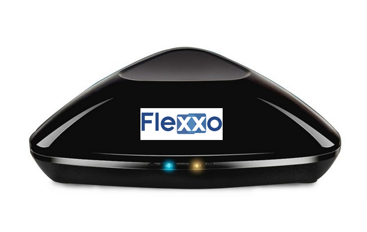

Flexxo Automação

RM PRO é o real final controle remoto universal com as seguintes características:
- + Suporte 80.000 + tvs, aparelhos de ar condicionado, áudios...
- + Códigos de atualização automática de nuvem
- + Dispositivo de correspondência automática sem aprender
- :+ Suporte 315/433 MHZ dispositivos sem fio
- + Ios/android APP Controle de qualquer lugar
- + Home/afastado modo, sleep/wake-up modo, os pais Mode e modo de segurança
- + Ultra Força e cobertura de 360graus
Exceto controle aparelho diretamente, os usuários também podem predefinidos agendamento, Tema de modo que aparelhos vai ligar/desligar automaticamente sob diferentes temas. Por exemplo, você pode criar um "modo de apresentação", de modo que consecutivos ações (e. g. Fechar o curtains→turn no computer→turn no projector→the projetor mudar para o canal) Será levado às 9 a. m. Todos os dias.
- . Suporte todos os dispositivos IR controlados, tais como televisão, ar condicionado, DVD e etc.
]
- . Suporte 433 MHz e 315 MHz freqüências.
- . Suporte Wifi 2,4 GHz b/g/n
- . Aplicativos de suporte para Android e iOS
- . Controle sua TV por seu telefone inteligente via internet
- . Você pode definir o tempo de inicialização de TV/ar condicionado/DVD com antecedência
- . Modos automáticos de apoio, auto casa e auto longe ( AUTO LONGE funciton está disponível apenas no telefone Android )
- Fácil configuração: conexão um passo para sua casa ou escritório wi-fi, nenhum gateway necessário
- perfis: Transforme suas iOS ou smartphone Android em um controle remoto universal
- Smart control: Usando FLEXXO app, você pode controlar os seus dispositivos em qualquer lugar, a qualquer hora